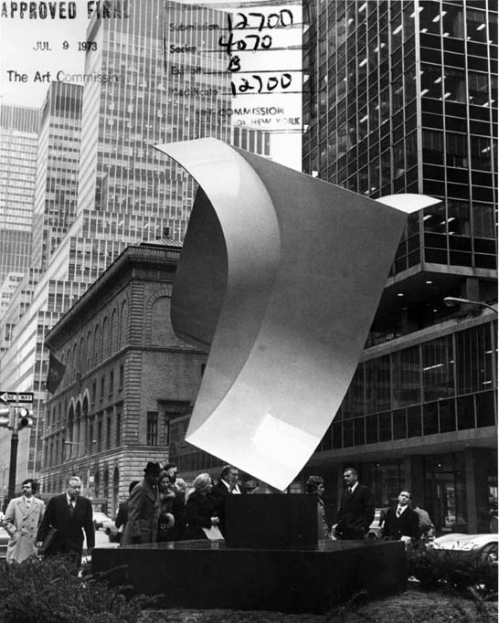

by Alan Moore
|
Art works have been disappearing around Staten Island this spring and summer, changing and vanishing in unexpected ways. It’s disconcerting if you think of art as something unchanging, made to be -- that should be -- there for all time. Of course this isn’t so. Contemporary public art has a lifespan, sometimes very brief.
The first to go was a mural painted by Kristi Pfister two summers ago on a building on Clove Road. Her mural, funded by COAHSI, depicted the houses of the street seen in earth-toned profile above a cross-sectioned street imagined deep into the earth, revealing rocks, bones and skeletons. Pfister's mural was “gone over'” in late spring by a commercial sign painter. Of course this swift suppression of a work conceived for public enjoyment in favor of another directed at the getting of money demonstrates overt contempt for public art. It is a classic case of art versus commerce where, as we know from this central myth of our culture, art loses. The story is a little more nuanced, however. Yes, the mural was wiped out by a graffiti-style painter’s advertisement for a tattoo parlor. But a key image in Pfister’s pictorial meditation, a 17th century Dutch colonial house, has been retained in the new design. There is then a token recognition of the site of the public mural and an aspect of its imagery in this work-for-hire by an aerosol artist that makes the commercial sign “artful”, that is, knowing of itself in its being. Aerosol art -- “graffiti” -- is the most contingent and ephemeral of mural styles, often no sooner put in place than wiped away. Tattoo, the commercial art advertised by the sign, is also necessarily ephemeral, limited to the lifetime of its `canvas,’ and well before that span is reached, feathering away into an illegible blur of ink-stained skin. Both artforms, graffiti and tattoo, have been traditionally linked with aggressive trespass, crime and the life of the underclass. Tattoo has only recently been legitimized as a cosmetic practice, and indeed allowed as a business. Likewise, graffiti-style aerosol art has only a tenuous foothold in commerce as a genre of sign-painting. So this incident of disappearing art evidences not only the clash of art and commerce but the clash of two image cultures in public art. One is imbued with ideals of permanence and change; Pfister’s mural itself was a meditation on the obliteration of humans and their creations with the passage of time. The other is wedded to the moment of its creation -- it shines briefly and disappears. |

|
Untitled No. 1 vaguely resembled a piece of nautical equipment, like the old anchors and capstans that stud the asphalt along our gradually renovated waterfront promenade. The piece, however, had not even the glamor of historical association that these relics possess. It is (was) an artwork with a nautical air; this hunk of white-painted steel might have been torn from Corbusier’s Villa Savoy. The work in any case was entirely abstract. This diminishes its reality as art in the eyes of most casual observers (although to some it enhances it).
How did Untitled No. 1 come to be there in the first place? No one seems to know. This artwork stood at the end of the taxi ramp of the ferry terminal as if in aesthetic witness to the mentality of the builders of the approaches to the St. George terminal. This obstacle course is built entirely for machines, as if robots were riding the ferry every day, spit out directly into trains and cars without any need to convey themselves by foot. The kind of abstraction that informs Untitled No. 1 however, was born of utopian ambitions, ambitions that inform the design of the terminal itself. It stood as an emblem of the new future, a future where humankind would move about swiftly and surely in cars on broad new highways. Poisoned air, and communities vanished or trodden by roads suggest that the cost of this vision has been high. Untitled No. 1 was like an emblem of the terminal itself, a functional hub of transport symbolized by a sculpture that evokes some zone of function within a system of pure geometry. Bright white with clean lines both squared off and rounded, Untitled No. 1 only came to stand for -- and thereby to resemble -- a glorified cul de sac, a rat trap stood on end that is the St. George ferry terminal itself. Daily I pass through St. George terminal and then Grand Central, the one depressing, confusing, physically and mentally straining, the other lofty, grand and inspiring. The classically conceived Beaux Arts tradition of the 19th century is slowly being revenged over the cut-rate utilitarian mode of our mid-century. Now Untitled No. 1 is gone, while still the figure of an ancient Greek, cast in enduring bronze, points down toward the terminal from its perch just east of Borough Hall. If a sculpture no one much cared for has been disappeared, perhaps it is not everyday philistinism, but a token of resistance to the very idea of the terminal which Untitled No. 1 had come to represent. By disappearing its emblem, its token, perhaps the terminal can be -- better than merely renovated -- reimagined . . . Of course this is fantasy. The sculpture has been replaced by nothing. The terminal has simply been tidied up. |
|
A little later in June Dan Werner, founder of Staten Island’s Art Network, was charged with theft in the mysterious heist of a snowscape from Borough Hall. Werner made no comment to the Staten Island Advance about his actions. But he was apparently videotaped by a surveillance system designed to catch criminals. In fact I believe Werner may be emulating Christopher D'Arcangelo, the late conceptual artist who staged removals of masterworks from museum walls, then photographed them on the floor. This alleged act by Werner is a clean reversal of what he’s been up to for years, placing Sunday painters in public spaces. Now he is (charged with) removing them. Dan Werner’s strange, apparently motiveless act of removal is a true work of art: the style is conceptual, the mode is institutional critique.
The grandest instance of disappearing art on Staten Island this summer was the Sourdre or Light Water installation by the Parisian Bertrand Ivanoff in an abandoned warehouse along the sere and peeling esplanade east of the ferry terminal. Ivanoff simply pumped water up to the roof of the aged concrete building. The water dripped down through the structure, floor by floor, cascading and pooling in the clean concrete caverns of the old warehouse. During the opening Staten Island’s miniscule avant-garde community, consisting principally of Newhouse Gallery staff, friends of the artist, and the occasional fishing citizen lured in by free wine, tramped up and down the stairways of the building to see the water fall. From the outside, water sheeted down the wall from vents at the level of each floor, feathering off and saltating in the harbor breeze.
I questioned curator Olivia Georgia about Sourdre. Yes. For some observers, Sourdre phantasmatically materializes a dramatic vision. Ivanoff has aestheticized this vast empty industrial building through a simple elemental intervention -- pouring water on it. To examine each floor in turn is to look at a space where, very briefly, an artist and a museum tell us, art is to be seen. (That is, only on the weekends. During the week the water -- and the art -- evaporates.) Even for those who do not think of leaky roofs as art, looking through this empty building where one is told art is to be seen is necessarily an act of imagination. There is no art to be seen. Which, in the long run, is precisely the point. With a minimum of renovation, relative, say, to the 19th century buildings crumbling to the west of it, this grand warehouse could be made over into an art museum. Sourdre then, functions as a kind of subtle suggestion for urban renewal. It advertises Staten Island's picturesque abandoned waterfront properties to the international art community, in effect prepping the area for Peter Eisenman’s proposed terminal redesign.
|
|
| Watching art come and go, arise and cease to exist, either deliberately, mysteriously or simply as part of its engagement with circumstances, has proved to be the principal esthetic interest of the summer on Staten Island. These stories have demonstrated to me that far from the eternal, it is life, death and dreams with which art is principally concerned, not as its subject only but in its very being. |
|